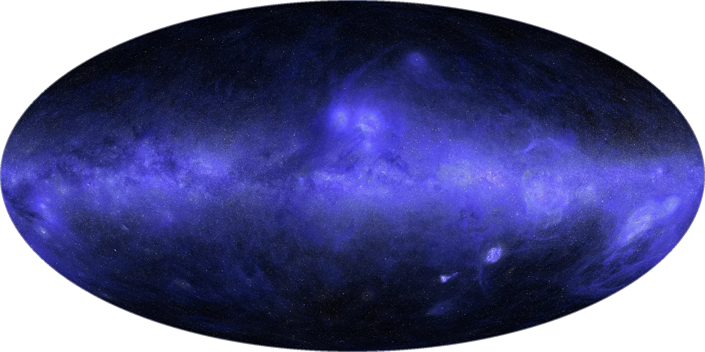
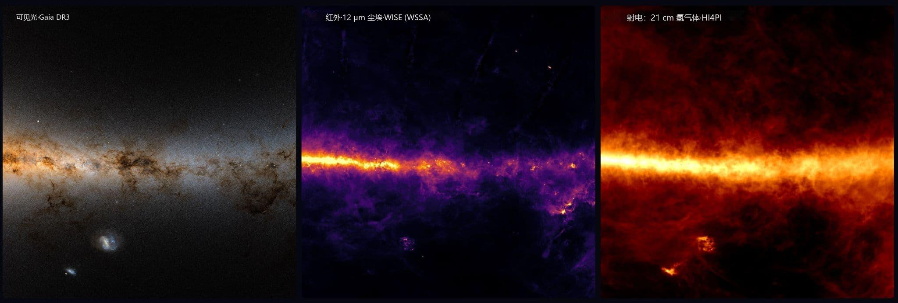
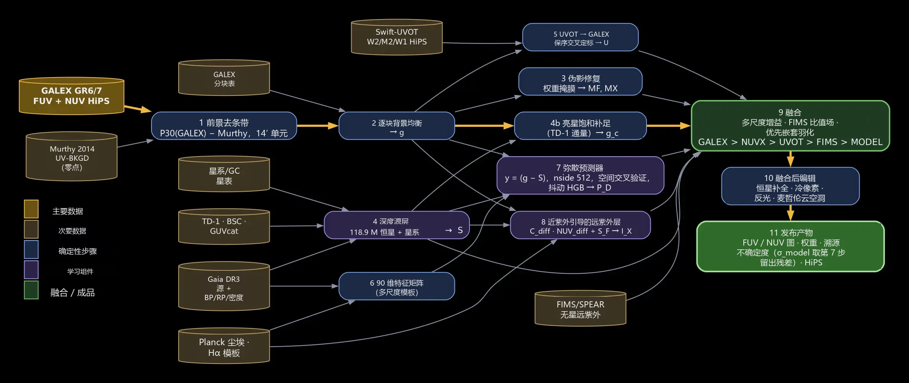
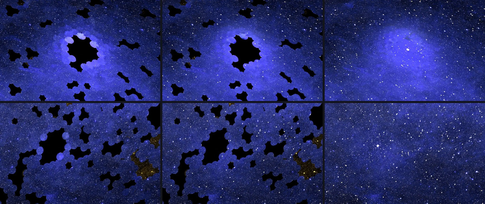
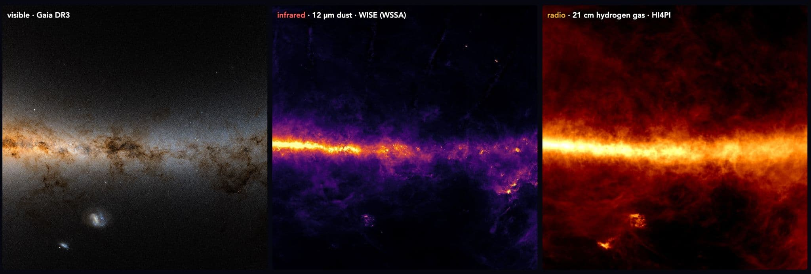

缺失的天空地图
📖 中文摘要
专业术语注解
图像修复（inpainting）：用周边像素与跨波段关系还原图像缺失区域的机器学习技术交叉校准：把不同望远镜仪器采集的数据统一到同一标度与分辨率以便合并GALEX：NASA的紫外空间望远镜，2003-2013年拍摄约三分之二天空大气辉光：地球大气造成的微弱紫外背景，未去除会在单次观测边缘留下圆盘痕迹全天图：覆盖整个天球、按统一坐标系拼接而成的某一波段图像📄 中文全文
- 类别： 科学（Science）
- 来源： https://www.anthropic.com/research/the-missing-map-of-the-sky
科学（Science） 2026 年 10 月 8 日 发布 2026 年 10 月 8 日 团队 科学 主题
在本文中，Johns Hopkins University的天体物理学家、Anthropic研究员Brice Ménard讲述了他如何与Claude Science合作，制作出第一幅完整的紫外（UV）全天图。这幅图将成为一件很有价值的教学工具，让学生能够细致看到这一波长下银河系丰富的结构。 相关文章 * 科学 2026 年 11 月 4 日 用Claude研究穹窿颗粒

以银河系中心为中央的整个天空，在紫外波段（结合远紫外154 nm与近紫外232 nm）呈现。这张图约三分之一的部分（包括银河系盘面的大部分），是用Claude Science按本文所述方法预测出来的。图中另有若干图层，把每个像素标注为"实测"或"预测"，并给出不确定性估计；你可以在这里查看。 我教天体物理学时，常常先让学生看到：观测波长不同，天空会呈现出完全不同的样子。每个波段都会显出不同的特征。在可见光下，主要看到的是恒星；切换到红外，就会显出沿银河系聚成一条带的微小尘埃颗粒所发出的辉光；到了射电波段，恒星与尘埃淡去，氢气——形成新恒星的原料——变得可见；而在X射线下，能看到剧烈的现象，比如恒星爆发，或物质盘旋落进黑洞。这些特征合在一起，让天文学家得以理解气体如何坍缩成恒星、恒星如何把尘埃播撒进星系，以及像我们这样的星系如何成形。
天空的三种视图：可见光、红外与射电。图片来源：ESA Gaia DR3、NASA WISE、HI4PI。而讲到紫外光、讲到它如何显出被星光照亮的尘埃——从年轻恒星周围的云，到恒星爆发留下的环——我总得先道个歉。因为我能拿给学生看的唯一一张UV图，满是窟窿。
为何此前没有完整的UV全天图
紫外光会被大气中的臭氧层吸收，因此要在紫外波段观测宇宙，就必须进入太空。过去50年间，空间望远镜在紫外波段观测了部分天区并公布了数据。但仍有大片区域从未被观测过。 最大的数据集来自NASA的GALEX任务，它从2003年运行到2013年，通过约38,000次独立观测拍摄了约三分之二的天空。但GALEX有意避开了存在明亮恒星的位置，包括银河系盘面上的那些区域（星系扁平的盘，恒星分布最密集之处），因为有损坏卫星探测器的风险。其他空间望远镜，例如NASA的Swift与韩国的FIMS/SPEAR，也获取了额外数据，但即便把这些数据集合在一起，仍有若干缺失的拼块。 统计学方法确实可以估计缺失数据，拼出一幅完整的紫外全天图。但要把这件事做好，需要数周煞费苦心的细致工作：在单个像素层面做一丝不苟的校准，还要反复进行复杂的分析。可以理解，天体物理学家往往会把这类工作搁在一边，去追逐更紧迫的研究。大多数学科都积压着类似的项目——它们本可以讲清一个关键概念、或帮到其他研究者，却始终在任何人的清单上排不到足够靠前的位置，因而从未被完成。有了Claude，着手处理这类优先级较低的工作变得容易了。
补全缺失的地图
 今年夏天，我着手用Claude Science制作一幅完整的紫外全天图。指令说起来简单，做起来却不容易：收集所有能拿到的UV数据集，把它们统一到同一标度上，合并成一张图，再把从未有UV望远镜观测过的每一块天区都补上。
为此，Claude调度了一队AI智能体。首先，这些智能体在网页上检索公开可得的天文UV巡天数据，每一项都包含海量的独立数据点或图像——以NASA的GALEX任务为例，是数万幅图像——它们跨越数年、在不同条件下采集而来。
下载数据之后，智能体必须让每项巡天在内部保持一致，好使某个时期拍摄的图像能与另一时期的图像相互比较。这需要特别留意明亮恒星周围的区域。正如在地球上，太阳或路灯会给照片添上眩光，恒星也会给空间望远镜拍下的天空图像添上眩光。要精确测量恒星周围更微弱的紫外光，就必须先去掉这层眩光。许多智能体并行处理天空的不同区域，得以把这些差异抹平。
接下来要把各项巡天合并。这些数据集由不同望远镜上的不同仪器采集，各自对紫外天空的呈现略有差异，因此必须先彼此交叉校准、按同一分辨率重绘、映射到同一套坐标系，才能合并成一张图。我把该如何做的高层指令交给Claude，Claude便派一队智能体去执行这些任务。
随后是最难的一步：填补地图上的空白。大约三分之一的天空从未在紫外波段被观测过。为了处理这些空白，我请Claude Science使用一种叫图像修复（inpainting）的技术——这是机器学习中常见的做法：用数百万张照片训练出的模型，学会图像中每个部分与其周边环境的关系，再借此还原图像中受损或缺失的部分。
Claude把这一方法与我们手头可用的额外信息结合起来。在UV数据缺失的地方，我们确实还有其他波段的观测，包括可见光、红外与射电。利用_已经_完成UV测绘的那三分之二天空，Claude学会了UV亮度与这些其他波段之间的关系。随后它把这一关系套用到没有UV数据的那三分之一天空上，估计出每个点应当是什么样子，以及它对这一估计有多大的把握。
为了检验模型预测有多准，我请Claude取一些我们已经有UV数据的区域，故意遮掉其中一部分，造出图像修复本就用来填补的那类空白。模型不得接触真实数值，只能靠学到的东西把图补全。经过几轮改进之后，它已能把被隐藏的数据估计到与真实UV测量值相差约10%以内，这一差别在人眼看来几乎察觉不到。
最后，在这片经图像修复得到的弥散背景之上，Claude又叠加了超过1亿颗单颗恒星的紫外光估计值，这些估计由ESA的Gaia卫星在可见光波段的测量推得。第一版完整的紫外全天图就此完成。
今年夏天，我着手用Claude Science制作一幅完整的紫外全天图。指令说起来简单，做起来却不容易：收集所有能拿到的UV数据集，把它们统一到同一标度上，合并成一张图，再把从未有UV望远镜观测过的每一块天区都补上。
为此，Claude调度了一队AI智能体。首先，这些智能体在网页上检索公开可得的天文UV巡天数据，每一项都包含海量的独立数据点或图像——以NASA的GALEX任务为例，是数万幅图像——它们跨越数年、在不同条件下采集而来。
下载数据之后，智能体必须让每项巡天在内部保持一致，好使某个时期拍摄的图像能与另一时期的图像相互比较。这需要特别留意明亮恒星周围的区域。正如在地球上，太阳或路灯会给照片添上眩光，恒星也会给空间望远镜拍下的天空图像添上眩光。要精确测量恒星周围更微弱的紫外光，就必须先去掉这层眩光。许多智能体并行处理天空的不同区域，得以把这些差异抹平。
接下来要把各项巡天合并。这些数据集由不同望远镜上的不同仪器采集，各自对紫外天空的呈现略有差异，因此必须先彼此交叉校准、按同一分辨率重绘、映射到同一套坐标系，才能合并成一张图。我把该如何做的高层指令交给Claude，Claude便派一队智能体去执行这些任务。
随后是最难的一步：填补地图上的空白。大约三分之一的天空从未在紫外波段被观测过。为了处理这些空白，我请Claude Science使用一种叫图像修复（inpainting）的技术——这是机器学习中常见的做法：用数百万张照片训练出的模型，学会图像中每个部分与其周边环境的关系，再借此还原图像中受损或缺失的部分。
Claude把这一方法与我们手头可用的额外信息结合起来。在UV数据缺失的地方，我们确实还有其他波段的观测，包括可见光、红外与射电。利用_已经_完成UV测绘的那三分之二天空，Claude学会了UV亮度与这些其他波段之间的关系。随后它把这一关系套用到没有UV数据的那三分之一天空上，估计出每个点应当是什么样子，以及它对这一估计有多大的把握。
为了检验模型预测有多准，我请Claude取一些我们已经有UV数据的区域，故意遮掉其中一部分，造出图像修复本就用来填补的那类空白。模型不得接触真实数值，只能靠学到的东西把图补全。经过几轮改进之后，它已能把被隐藏的数据估计到与真实UV测量值相差约10%以内，这一差别在人眼看来几乎察觉不到。
最后，在这片经图像修复得到的弥散背景之上，Claude又叠加了超过1亿颗单颗恒星的紫外光估计值，这些估计由ESA的Gaia卫星在可见光波段的测量推得。第一版完整的紫外全天图就此完成。

数据如何流经Claude Science流程以生成最终地图。圆柱表示公开数据集输入；蓝框是Claude执行的确定性步骤；紫框是Claude通过统计学习得到的组件；绿框是融合环节与最终成品。反复试错
Claude并非第一次就把一切都做对。比如某天晚上翻看处理好的图像时，我在最暗的一片天区里察觉到有些_不对劲_：一些淡淡的圆圈，每一个都比周围的邻域略亮或略暗一点。 这些正是单次GALEX观测留下的痕迹。每幅GALEX图像拍下的是天空中一块圆形区域，其中都带有来自地球大气的、略微不均匀的微弱紫外辉光。如果这层辉光没有被彻底去掉，每个圆圈就会比周围显得稍亮或稍暗。Claude在项目开始时就把这一点列为已知问题，但地图仍在其他智能体的两轮复核中通过，问题没被发现。 我告诉Claude："我能看到带着单次观测印记的圆盘；你能修正一下吗？"智能体把问题追溯到了残留的大气辉光。随后Claude在全部38,000次观测中校正了这层辉光。经过几个小时的处理，那些圆圈不见了。

明亮恒星即便没有被直接观测，也会污染邻近的UV观测。每一行展示的是GALEX避开某些区域后的观测结果。左：单次指向以淡淡圆盘的形式可见。中：每次指向去掉一个背景水平之后，仍能看到一些圆盘。右：最终地图，经过Claude额外的校准处理，空缺由预测结果与Gaia恒星填补。图片来源：NASA GALEX GR6/7 (MAST/STScl) - UV-BKGD (Murthy 2014) • Swift-UVOT (NASA HEASARC) • FIMS/SPEAR (KASI/MAST) • TD-1 • ESA Gaia DR3 (DPAC) • Planck与Ha模板用于补洞。最终地图
Claude和我前后做出了十几个版本的地图，一版比一版精细。我们的合作延续了数日，并形成了一个固定的节奏：我先在Claude Science里与它几番交流、规划下一步，随后Claude独立进行数小时的计算，而我则回去忙别的项目。 最终地图呈现了紫外波段的整个天空，展示出许多有趣的结构：明亮年轻恒星周围发光的尘埃云，以及勾勒出大质量恒星爆发所吹出的气泡的巨大尘埃环与尘埃圈。远离银盘之处，微弱的尘埃丝缕横贯天空，被整个星系汇合的星光照亮。银盘下方坐落着大、小麦哲伦云，这两个邻近的小星系因年轻恒星而明亮。我觉得它很美——它足以与那些经典星图并列，帮助一代又一代学生领略我们星系中运作着的丰富物理过程。 这一次，我得以推进这样一个项目，却不必牺牲本该投入研究的时间。我猜想，许多科学家都能想到一幅图、一张图表，或一份因为同样理由而被一再搁置的资料。
作者与致谢
致谢
制作这幅地图所用的测量数据，来自GALEX与Swift（NASA）、FIMS/SPEAR（韩国）、TD-1（欧洲），以及Planck与Gaia（ESA）。我感谢参与这些任务、并让数据得以公开的所有人。Claude Science中许多智能体为拼出这幅地图付出了耐心的劳动。我的贡献仅限于在这一过程中引导它们。
▸ 英文原文（点击展开）
The missing map of the sky
- Date: 2026-10-08
- Source: https://www.anthropic.com/research/the-missing-map-of-the-sky
The missing map of the sky
Published Oct 8, 2026 Team Science Topics
Here, Brice Ménard, an astrophysicist at Johns Hopkins University and a researcher at Anthropic, explains how he worked with Claude Science to produce the first complete map of the sky in UV light. The map will be a valuable educational tool, allowing students to see in detail the rich structure of the Milky Way visible at this wavelength. Related articles * Science Nov 4, 2026 Investigating vault particles with Claude
View more The entire sky, with the galactic center in the middle, in the ultraviolet (combining far-UV 154 nm and near-UV 232 nm). About a third of this map, including much of the galactic plane, was predicted with Claude Science using the method outlined in this post. Additional layers of the map label each pixel as “measured” or “predicted” and provide uncertainty estimates; you can see it here. When I teach astrophysics, I often begin by showing my students that the sky looks completely different depending on the wavelength you observe it in. Each brings out different features. In visible light, one mainly sees stars. Switching to infrared reveals the glow of tiny grains of dust concentrated in a band along the Milky Way. In radio waves, the stars and dust fade and hydrogen gas—the raw material from which new stars form—becomes visible. And in X-rays, one can see violent phenomena, like stars exploding, or matter spiraling into a black hole. Together, these features let astronomers understand how gas collapses into stars, how stars seed the galaxy with dust, and how galaxies like ours take shape.

Three views of the sky: in visible light, infrared and radio. Credit: ESA Gaia DR3, NASA WISE, HI4PI.When talking about UV light and how it reveals dust illuminated by starlight, from the clouds around young stars to the rings left by stellar explosions, I have always had to apologize. The only UV map I could show was full of holes.
Why no complete UV map existed
UV light is absorbed by the ozone layer of the atmosphere, so to observe the universe in the UV spectrum, one has to go to space. Over the past 50 years, space telescopes have observed parts of the sky in UV and published their data. But much remains unobserved. The largest dataset comes from NASA’s GALEX mission, which ran from 2003 to 2013 and imaged about two-thirds of the sky in some 38,000 separate observations. But GALEX deliberately skipped locations with very bright stars, including those on the plane of the Milky Way (the flat disk of the galaxy, where stars are most densely packed), because of the risk of damaging the satellite’s detectors. Other space telescopes, such as NASA’s Swift and South Korea’s FIMS/SPEAR, acquired additional data, but even in those combined datasets, there are a number of missing pieces. Statistical techniques exist to estimate the missing data and create a complete UV map of the sky. But doing this properly takes weeks of painstaking work, involving meticulous calibrations at the level of individual pixels and sophisticated, repeated analyses. Understandably, astrophysicists tend to put this kind of work aside in pursuit of more pressing research. Most fields have a backlog of similar projects, ones that would explain a key concept or help other researchers, but which never rise high enough on anyone’s list to get done. With Claude, it has become easier to tackle such lower-priority work.
Building the missing map
 This summer, I set out to make a complete UV map of the sky with Claude Science. The instructions were simple to state, but not to carry out: gather every available UV dataset, put them all on a common scale, merge them into a single map, and fill in every patch of sky that no UV telescope has ever observed.
To do this, Claude orchestrated a team of AI agents. First, the agents searched the web for publicly available astronomical UV surveys, each comprising a massive collection of individual data points or images—tens of thousands of images, in the case of NASA’s GALEX mission—taken over several years and under varying conditions.
After downloading the data, the agents had to make each survey internally consistent, so that an image taken in one time period could be compared with an image taken in another. This required paying special attention to the regions around bright stars. Just as the sun or a streetlight can add glare to a photo here on Earth, stars can add glare to an image of the sky captured by a space telescope. That glare needed to be removed before the fainter UV light around the stars could be measured precisely. Many agents, working in parallel on different regions of the sky, were able to even out these differences.
Next, the surveys had to be combined. The datasets were collected by different instruments on different telescopes, and each one captures the ultraviolet sky slightly differently, so they had to be cross-calibrated against one another, redrawn at the same resolution, and mapped onto a common coordinate system before they could be merged into one map. I gave high-level instructions to Claude on how to do so, and Claude set a team of agents on the tasks.
Then came the hardest part: filling in the gaps in the map. Roughly a third of the sky has never been observed in UV. To account for those blank spots, I asked Claude Science to use a technique called inpainting—a common process in machine learning, in which a model trained on millions of photos learns how each part of an image relates to its surroundings, and uses that knowledge to restore damaged or missing portions of an image.
Claude combined this approach with additional information we had at our disposal. Where UV data is missing, we do have observations at other wavelengths, including visible, infrared, and radio. Using the two-thirds of the sky that has been mapped in UV, Claude learned how UV brightness relates to these other wavelengths. It then applied that relationship to the third of the sky for which no UV data exists, and estimated what it should look like at each point, and how confident it was in that estimate.
To check how accurate the model’s predictions were, I asked Claude to take regions for which we already have UV data and deliberately hide parts of them, creating the kinds of blank patches inpainting is designed to fill. The model had to use what it had learned to complete the picture without access to the real values. After several rounds of refinement, it was able to estimate the hidden data to within about 10% of the real UV measurements, a difference almost imperceptible to the human eye.
Finally, on top of this diffuse inpainted background, Claude added estimates of UV light from more than 100 million individual stars inferred from measurements by the European Space Agency’s Gaia satellite in visible light. The first version of the full UV map of the sky was complete.
This summer, I set out to make a complete UV map of the sky with Claude Science. The instructions were simple to state, but not to carry out: gather every available UV dataset, put them all on a common scale, merge them into a single map, and fill in every patch of sky that no UV telescope has ever observed.
To do this, Claude orchestrated a team of AI agents. First, the agents searched the web for publicly available astronomical UV surveys, each comprising a massive collection of individual data points or images—tens of thousands of images, in the case of NASA’s GALEX mission—taken over several years and under varying conditions.
After downloading the data, the agents had to make each survey internally consistent, so that an image taken in one time period could be compared with an image taken in another. This required paying special attention to the regions around bright stars. Just as the sun or a streetlight can add glare to a photo here on Earth, stars can add glare to an image of the sky captured by a space telescope. That glare needed to be removed before the fainter UV light around the stars could be measured precisely. Many agents, working in parallel on different regions of the sky, were able to even out these differences.
Next, the surveys had to be combined. The datasets were collected by different instruments on different telescopes, and each one captures the ultraviolet sky slightly differently, so they had to be cross-calibrated against one another, redrawn at the same resolution, and mapped onto a common coordinate system before they could be merged into one map. I gave high-level instructions to Claude on how to do so, and Claude set a team of agents on the tasks.
Then came the hardest part: filling in the gaps in the map. Roughly a third of the sky has never been observed in UV. To account for those blank spots, I asked Claude Science to use a technique called inpainting—a common process in machine learning, in which a model trained on millions of photos learns how each part of an image relates to its surroundings, and uses that knowledge to restore damaged or missing portions of an image.
Claude combined this approach with additional information we had at our disposal. Where UV data is missing, we do have observations at other wavelengths, including visible, infrared, and radio. Using the two-thirds of the sky that has been mapped in UV, Claude learned how UV brightness relates to these other wavelengths. It then applied that relationship to the third of the sky for which no UV data exists, and estimated what it should look like at each point, and how confident it was in that estimate.
To check how accurate the model’s predictions were, I asked Claude to take regions for which we already have UV data and deliberately hide parts of them, creating the kinds of blank patches inpainting is designed to fill. The model had to use what it had learned to complete the picture without access to the real values. After several rounds of refinement, it was able to estimate the hidden data to within about 10% of the real UV measurements, a difference almost imperceptible to the human eye.
Finally, on top of this diffuse inpainted background, Claude added estimates of UV light from more than 100 million individual stars inferred from measurements by the European Space Agency’s Gaia satellite in visible light. The first version of the full UV map of the sky was complete.
 How data flowed through the Claude Science pipeline to create the final map. Cylinders are public dataset inputs; blue boxes are deterministic steps Claude performed; purple boxes are components Claude learned statistically; green boxes are the fusion and the finished products.
How data flowed through the Claude Science pipeline to create the final map. Cylinders are public dataset inputs; blue boxes are deterministic steps Claude performed; purple boxes are components Claude learned statistically; green boxes are the fusion and the finished products.
Trial and error
Claude did not get everything right on the first try. Looking through the processed images one evening, for example, I noticed something off in one of the dimmest fields: faint circles, each a touch brighter or darker than its neighbors. These were the footprints of individual GALEX observations. Each GALEX image captures a circular patch of the sky, and each contains a slight, not-quite-uniform UV glow from the Earth’s atmosphere. If that glow is not fully removed, each circle appears slightly brighter or darker than those around it. Claude had listed this as a known issue at the start of the project, but the map had still passed two rounds of review by other agents without the problem being caught. I told Claude, “I can see discs with the imprint of individual observations; can you correct that?” The agents traced the problem back to the leftover atmospheric glow. Claude then corrected for that glow in all 38,000 observations. After a couple of hours of processing, the circles were gone. Bright stars contaminate nearby UV observations even when not observed directly. Each row shows observations with regions GALEX avoided. Left: individual pointings visible as faint discs. Middle: after removing one background level per pointing, some disks are still visible. Right: the finished map, after an additional calibration process done by Claude with the holes filled by the prediction and Gaia stars. Credit: NASA GALEX GR6/7 (MAST/STScl) - UV-BKGD (Murthy 2014) • Swift-UVOT (NASA HEASARC) • FIMS/SPEAR (KASI/MAST) • TD-1 • ESA Gaia DR3 (DPAC) • Planck & Ha templates for gap-filling.
The final map
Together, Claude and I created more than a dozen successive versions of the map, each more refined than the last. Our collaboration spread over several days and took on a predictable rhythm: I would have several exchanges within Claude Science to plan the next steps, then Claude would independently perform hours of computations, while I went back to working on other projects. The finished map shows the entire sky in UV light, and displays many interesting structures: dust clouds glowing around luminous young stars, giant dust rings and loops tracing gas bubbles blown out by the explosions of massive stars. Far from the galactic plane, faint filaments of dust thread across the sky, lit by the combined starlight of the entire galaxy. Below the plane sit the Large and Small Magellanic Clouds, two small neighboring galaxies bright with young stars. I think it’s beautiful—and it can join the other canonical maps in helping generations of students appreciate the variety of physical processes at work in our galaxy. For once, I was able to pursue a project like this without sacrificing time I would otherwise have devoted to research. I suspect many scientists can think of a map, a figure, or a resource they’ve been putting off for the same reason.
Authors & acknowledgements
Acknowledgements
The measurements used to create this map are from GALEX and Swift (NASA), FIMS/SPEAR (Korea), TD-1 (Europe), and Planck and Gaia (ESA). I’m grateful to everyone involved in these missions and in making the data public. Many agents working in Claude Science contributed the patient labor of putting this map together. My contribution was limited to guiding them in the process.